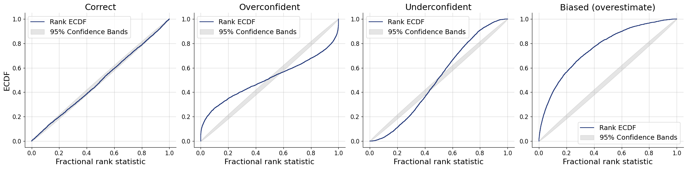
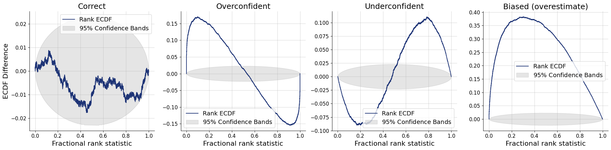
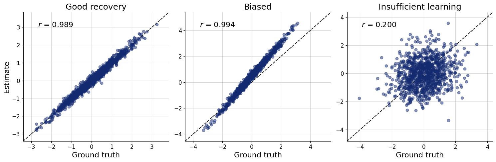
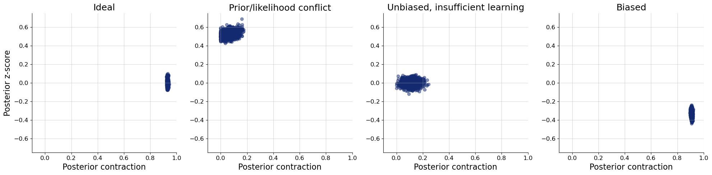
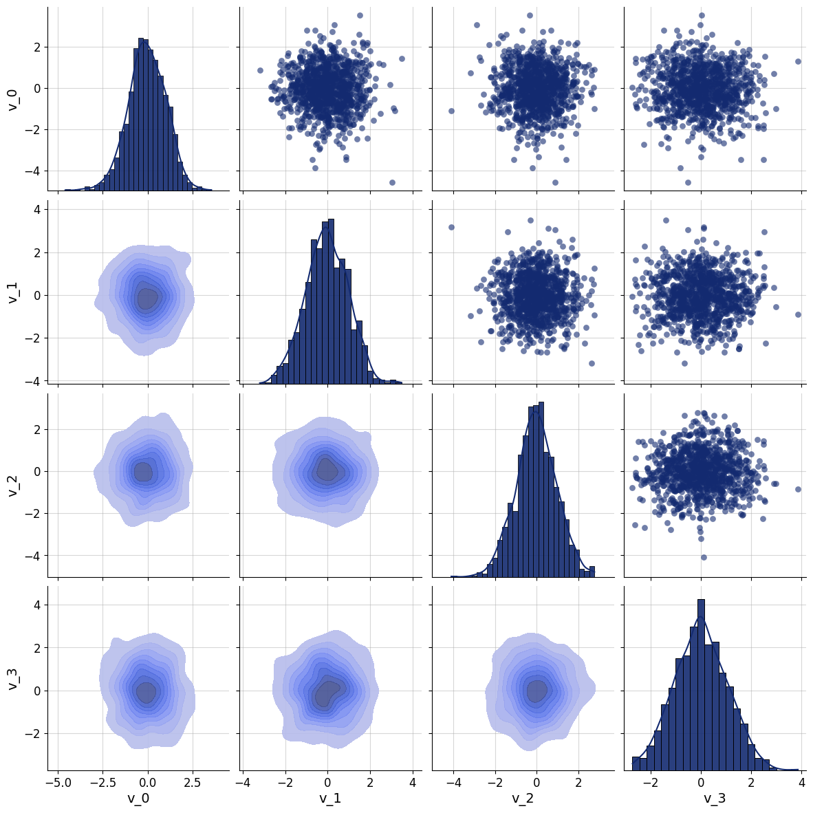

import os
os.environ["KERAS_BACKEND"] = "tensorflow"
import keras
import numpy as np
import matplotlib.pyplot as plt
import pandas as pd
import bayesflow as bfadapter = (bf.Adapter()
.concatenate(["mu", "sigma"], into = "inference_variables")
.rename(["n"], "inference_conditions")
.concatenate(["x", "observed"], into = "summary_variables")
)n = np.random.randint(10, 101)
mu = np.random.normal(0, 1)
observed = np.zeros(100)
observed[:n] = 1
print(n)
np.sum(observed)
x = np.zeros(100)
x[:n] = np.random.normal(mu, 1, size=n)
x76array([ 1.23715808, -0.22601246, -0.55016433, -0.22546447, 1.35101034,
1.88075516, -0.95509754, -0.86328737, -1.5967541 , -0.71167925,
0.22148318, 0.93508905, 1.70786107, 0.05597368, 0.67410325,
0.45753088, 0.92324173, 1.02822826, 0.03982971, 1.13354945,
-1.21881397, -1.39030184, -0.39207349, -0.20549833, 1.3566496 ,
0.24179264, 0.29810385, 1.31375472, -0.02603598, -0.82479492,
0.84446065, 1.74827293, 1.9145994 , -0.31523025, 1.49556255,
0.36521583, -0.24242545, -1.45542937, 0.43769302, -1.87809287,
0.09117812, -2.03526866, -0.53464601, 1.37841846, -0.02296348,
1.18991534, 0.42332735, -0.31742199, -1.70958312, 0.03954183,
0.65045408, 2.01528936, 0.09762041, -1.60783743, 0.40820525,
-0.47926001, 1.69077644, -0.82216435, -0.85504061, -1.49186171,
-0.52252873, -0.70305619, -1.51399371, 0.61108915, -1.18309578,
0.41573293, 0.03721496, -1.10498748, 0.0768642 , 0.86654961,
0.89910976, -1.09862628, -2.63952544, 0.07113264, -1.29157717,
-0.53480058, 0. , 0. , 0. , 0. ,
0. , 0. , 0. , 0. , 0. ,
0. , 0. , 0. , 0. , 0. ,
0. , 0. , 0. , 0. , 0. ,
0. , 0. , 0. , 0. , 0. ])corpus=pd.read_csv("~/Downloads/Rcorpus_PB2.dat", delimiter="\t", usecols=range(5))corpus| sentID | nw | wordID | length | freq | |
|---|---|---|---|---|---|
| 0 | 1 | 11 | 1 | 3 | 112.096683 |
| 1 | 1 | 11 | 2 | 3 | 532.671797 |
| 2 | 1 | 11 | 3 | 10 | 3.237331 |
| 3 | 1 | 11 | 4 | 4 | 6557.467940 |
| 4 | 1 | 11 | 5 | 3 | 20527.116504 |
| ... | ... | ... | ... | ... | ... |
| 998 | 114 | 11 | 7 | 8 | 96.089879 |
| 999 | 114 | 11 | 8 | 7 | 25.440846 |
| 1000 | 114 | 11 | 9 | 5 | 942.112454 |
| 1001 | 114 | 11 | 10 | 3 | 5535.509490 |
| 1002 | 114 | 11 | 11 | 11 | 46.949479 |
1003 rows × 5 columns
#df=pd.read_csv("~/Downloads/fixseqin_PB2expVP10.dat", delimiter="\t", names=["sentID", "wordID", "position", "duration"], usecols=range(4))
import pandas as pd
df=pd.read_csv("~/Downloads/fixseqin_PB2expVP10.dat",
delimiter="\t",
names=["sentID", "wordID", "duration"],
usecols=[0, 1, 3])df| sentID | wordID | duration | |
|---|---|---|---|
| 0 | 1 | 1 | 183 |
| 1 | 1 | 3 | 165 |
| 2 | 1 | 3 | 115 |
| 3 | 1 | 4 | 210 |
| 4 | 1 | 6 | 266 |
| ... | ... | ... | ... |
| 872 | 114 | 7 | 180 |
| 873 | 114 | 8 | 209 |
| 874 | 114 | 9 | 195 |
| 875 | 114 | 11 | 306 |
| 876 | 114 | 11 | 109 |
877 rows × 3 columns
network = keras.Sequential([
keras.Input((2,)),
keras.layers.Dense(64, activation="relu"),
keras.layers.Dropout(0.1),
keras.layers.Dense(64, activation="relu"),
keras.layers.Dropout(0.05),
keras.layers.Dense(10, activation="softmax")
])
#model.summary()
x = keras.random.normal((100, 2))network(x, training=True)network = keras.models.Sequential([
keras.Input((3,)),
keras.layers.Dense(4, activation="relu"),
keras.layers.BatchNormalization(),
keras.layers.Dense(4),
keras.layers.BatchNormalization(),
keras.layers.Activation("relu"),
keras.layers.Dense(2, activation="softmax")
])
network.summary()
x = keras.random.normal((100, 3))
x.shape # (100, 3)
z = network(x)
z.shape # (100, 2)keras.optimizers.Adam(learning_rate=1e-3, clipnorm=1.0, clipvalue=0.5)x = keras.random.normal((10, 3))
x.shape # TensorShape([10, 3])z = network(x)
z.shape # TensorShape([10, 5])import numpy as np
import matplotlib.pyplot as plt
from scipy.stats import beta
prior = np.random.beta(1, 1, size=5000)
x = np.random.binomial(n=10, p=prior)
observed = 7
posterior = prior[x == observed]
f=plt.hist(posterior, density=True, color="lightgray", bins = np.linspace(0, 1, 10), edgecolor="black")
f=plt.plot(np.linspace(0, 1, 100), beta(1+7, 1+3).pdf(np.linspace(0, 1, 100)), linewidth=3)
f=plt.ylabel("Density", fontsize=16)
f=plt.xlabel(r"$\theta$", fontsize=16)import bayesflow as bf
class Simulator(bf.simulators.Simulator):
def sample(self, batch_size):
theta = np.random.beta(1, 1, size=batch_size)
x = np.random.binomial(n=10, p=theta)
return dict(theta=theta, x=x)
simulator = Simulator()
simulator.sample(10)approximator = bf.approximators.ContinuousApproximator(
adapter=adapter,
inference_network=inference_network
)np.log1p(-p)import bayesflow as bf
n_sims=5_000
prior = np.random.normal(size=(n_sims, 4))
prior.shape
posterior = np.random.normal(loc=[0, 0, 0, 1], scale=[1, 0.5, 1.5, 1], size=(n_sims, 1000, 4))
posterior.shape(5000, 1000, 4)f=bf.diagnostics.calibration_histogram(estimates=posterior, targets=prior, variable_names=["Correct", "Overconfident", "Underconfident", "Biased (overestimate)"])WARNING:bayesflow:The ratio of simulations / posterior draws should be > 20 for reliable variance reduction, but your ratio is 5. Confidence intervals might be unreliable!
f=bf.diagnostics.calibration_ecdf(estimates=posterior, targets=prior, variable_names=["Correct", "Overconfident", "Underconfident", "Biased (overestimate)"])
f=bf.diagnostics.calibration_ecdf(estimates=posterior, targets=prior, difference=True, variable_names=["Correct", "Overconfident", "Underconfident", "Biased (overestimate)"])
n_sims=1_000
prior = np.random.normal(size=(n_sims, 3))
prior.shape
posterior_mean = prior.copy()
posterior_mean[:,1] = 0.5 + 1.3 * posterior_mean[:,1]
posterior = np.random.normal(loc=posterior_mean, scale=[0.15, 0.15, 4])
posterior[:,2] = posterior[:,2] / np.std(posterior[:,2])
posterior = posterior[:,None,...]
posterior.shape(1000, 1, 3)fig=bf.diagnostics.plots.recovery(estimates=posterior, targets=prior, variable_names = ["Good recovery", "Biased", "Insufficient learning"])
n_sims=1_000
prior = np.random.normal(size=(n_sims, 4))
prior.shape
posterior_mean = prior.copy()
posterior_mean = posterior_mean[:,None,...]
posterior_mean = np.repeat(posterior_mean, repeats=1000, axis=1)
posterior_mean[:,:,1] = 0.5 + posterior_mean[:,:,1]
posterior_mean[:,:,3] = -0.1 + posterior_mean[:,:,3]
posterior = np.random.normal(loc=posterior_mean, scale=[0.25, 0.95, 0.95, 0.3])fig=bf.diagnostics.plots.z_score_contraction(estimates=posterior, targets=prior, variable_names=["Ideal", "Prior/likelihood conflict", "Unbiased, insufficient learning", "Biased"])
axs = fig.get_axes()
for ax in axs:
ax.set_xlim(-.1, 1)
ax.set_ylim(-0.75, 0.75)
bf.diagnostics.plots.pairs_posterior(estimates=prior)